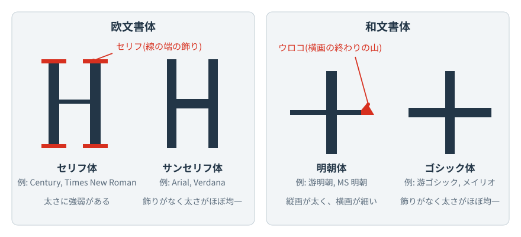

この資料は 書体のスライド（PDF、40枚・4up） の補足です。スライドの書体見本を見ながら読み進めてください。以下の説明は、スライド上の断定や分類を補い、一部を訂正します。見出しの括弧内は、対応するスライドの番号です。
1. 書体の分類の目安（スライド7〜14）
書体(フォント)は、文字の形の特徴でおおまかに分類できます。欧文書体では、線の端に小さな飾り(セリフ)があるものをセリフ体、ないものをサンセリフ体とよびます(sans はフランス語で「〜なし」)。和文書体では、横画が細く縦画が太く、横画の終わりにウロコとよばれる三角形の山があるものを明朝体、線の太さがほぼ均一なものをゴシック体とよびます。

図は特徴を強調した模式図で、実際の書体の字形ではありません。実際の字形はスライドの見本で確かめてください。明朝体とセリフ体、ゴシック体とサンセリフ体は、線の太さの変化や飾りの有無という点で似た特徴をもちます。そのため、和文と欧文を混ぜて組むときは、明朝体にはセリフ体、ゴシック体にはサンセリフ体を合わせるのが一つの目安です。
2. 明朝体とゴシック体は、用途の目安（スライド7〜9・40）
明朝体は小説や新聞の本文、ゴシック体は見出しや看板などでよく使われます。ただし、「長文なら明朝体の方が必ず読みやすい」とは限りません。細めのゴシック体を本文に使うこともあります。読みやすさには文字サイズ、太さ、行間、一行の長さ、画面の解像度なども関係します。
欧文の serif（セリフ体）と sans-serif（サンセリフ体）は分類名です。Arial や Verdana のような個別の書体名とは区別します。スライド9のサンセリフ体の欄に sans-serif が書体名と並んでいるのは、Webページの書体指定(CSS)で「環境にあるサンセリフ体のどれか」を表す総称名です。特定の書体の名前ではありません。
3. 既定の書体と、環境によって使えない書体（スライド3・15・16）
Word の日本語版では、Word 2016 から、新しい文書の既定の書体が本文は游明朝、見出しは游ゴシック Light になりました(Word 2013 以前は MS 明朝・MS ゴシックなど)。その後の Word 2019・2021・2024 でも、日本語の本文の既定は游明朝です。Microsoft 365 では、2023年7月の発表から順次、欧文の既定の書体が Calibri から Aptos に切り替わりました。日本語の文書で英数字にどの書体が使われるかは、版やテーマの設定によるので、[ホーム]タブの書体名の欄で確かめましょう。
スライド16の HG 創英角ゴシックUB、HG ゴシックE、HG 明朝E、HG 丸ゴシックM-PRO は、現在は Microsoft 365 のクラウドフォントとして提供されている書体に含まれます。クラウドフォントは、Microsoft 365 のサブスクリプションがあり、インターネットに接続していて、Windows では「オプションの接続エクスペリエンス」を有効にしている場合に使えます。これらの条件を満たさない環境で文書を開くと、別の書体で代わりに表示され、字形や文字の幅、改行位置が変わることがあります。提出先や印刷する環境で書体が変わると困る場合は、PDF に変換して渡すなど、相手の環境に左右されない形にしましょう。
4. 太字・斜体ボタンは何をするのか（スライド4・18〜24・32）
太字や斜体のボタンを押すと、対応する書体があればそれに切り替わります。対応する書体がない場合は、ソフトウェアが線を太らせたり傾けたりすることがあります。この機械的な加工では、文字の隙間が潰れたり、形のバランスが変わったりすることがあります。
「このフォント名なら必ず大丈夫」と覚えるより、正規の太字・斜体があるか、選んだウェイトに対応するものが使われるか、実際に読めるかを確かめましょう。結果は書体の版や利用ソフトにも依存します。
スライド4・21・22が太字ボタンを使ってよいとしているのは、メイリオと游ゴシック Regular です。Word の見出しの既定である游ゴシック Light は、ソフトウェア上では別の書体名として扱われ、太字ボタンを押すと機械的に太らせた字形になることがあります。游明朝も同様で、太字ボタンでは Demibold は選ばれません。游明朝を太くしたいときは、書体名の欄で游明朝 Demibold を選びます(スライド23・24)。
強調する箇所を絞り、太さ・書体・下線などを重ねすぎないことも大切です。画面提出なら画面で、印刷物なら印刷して確認します。
5. ウェイトの名前と見た目の太さは別（スライド16）
Light、Regular、Medium、Demibold、Boldなどは、各書体ファミリー内で太さを選ぶための名称です。違うファミリーの「Regular」どうしが、同じ太さに見えるとは限りません。Windows に付属する主な和文書体のウェイトは次のとおりです。
| 書体ファミリー | 収録されているスタイル | 太字ボタンを押したとき |
|---|---|---|
游明朝 |
Light、Regular、Demibold |
機械的に太らせることがある。太くしたいときは Demibold を選ぶ |
游ゴシック |
Light、Regular、Medium、Bold |
Regular なら Bold が使われる。Light では機械的に太らせることがある |
メイリオ |
Regular、Bold(ほかに斜体) |
Bold が使われる |
MS 明朝・MS ゴシック |
1種類(太字なし) |
機械的に太らせる |
MS ゴシックとMS 明朝は、スライドの表にあるようなLightからBoldまでのウェイト展開をもつファミリーではありません。MS ゴシックをBold欄、MS 明朝をLight欄に置いた表は、見た目の比較として読み、正式なウェイト名の分類とは解釈しないでください。游明朝DemiboldもMediumと同じ名称ではありません。Demibold(SemiBoldともいう)は、Medium より太く Bold より細い段階を指す名前です。
6. 欧文書体と括弧・引用符（スライド11〜14）
スライド11〜14で Century、Times New Roman、Arial に付いている「括弧やクオートなどの約物との相性が悪い」という注記は、(f) [f] “f” のように、文字と括弧・引用符が隣り合ったときの見え方を指しています。とくに小文字 f の上部は右へ張り出す字形が多く、閉じ括弧や引用符と近づきすぎたり、接して見えたりすることがあります。どの程度目立つかは、書体、文字サイズ、斜体かどうかで変わります。気になる場合は、実際に印刷や表示をして確かめ、書体を変えるか、字間を調整します。
7. 画面と印刷で、なぜ印象が違うのか（スライド26〜32）
小さな文字を画面の画素に合わせて描くことと、印刷用に輪郭を描くことでは、見え方が違う場合があります。MS 明朝・MS ゴシックのように、小さな画面表示用のビットマップ字形も収録する書体があります。ただし、どの字形が使われるかはソフトウェア、文字サイズ、画面解像度などによります。
スライドの画面と印刷の比較は、その環境で得られた例です。「Windowsでは必ず細くなる」「印刷すると必ず読みにくい」という一般則ではありません。見た目が変わったら、最終的に読む環境で確かめて調整しましょう。
8. 合字は、書体と設定の両方で決まる（スライド34）
合字(リガチャ)は、fi や fl のように2つ以上の文字を1つにまとめた字形です。f の張り出しと i の点がぶつかるのを避けるためなどに使います。合字は OpenType という書体の形式の機能で、書体が合字の字形をもっていることと、ソフトウェアの設定で合字が有効になっていることの両方がそろったときに表示されます。Word では、[フォント]ダイアログの[詳細設定]にある「合字」の項目で、使う合字の種類を選べます。
合字には、ふつうの文章で使う標準合字と、装飾的な用途の随意合字などの種類があり、同じ fi の合字でも書体によってどちらの種類として収録されているかが違います。このため、スライド34に例として挙がった書体でも、Word の設定によっては合字にならないことがあります。スライドの例は「合字が使える書体の候補」と読み、実際に表示して確かめてください。合字にしても文字そのもの(f と i)は変わらないので、検索やコピーには影響しないのが普通です。
9. ベタ組みを出発点に、必要なところを調整する（スライド33・35・40）
和文本文では、文字を基本となる正方形の枠に配置するベタ組みが出発点になります。ただし、約物の前後、行頭・行末、和文と欧文の間などには、それぞれ組版上の調整があります。「すべての文字を例外なく同じ間隔にする」という意味ではありません。
見出しなどでは、プロポーショナルな字幅や字間調整を使うこともあります。「和文ではプロポーショナルを原則使わない」という禁止事項として覚える必要はありません。
10. 半角・全角と、形の似た別の記号を区別する（スライド38・39）
| 種類 | 文字 | Unicodeのコードポイント |
|---|---|---|
ASCIIの引用符 |
|
U+0022 |
全角引用符 |
|
U+FF02 |
開き・閉じの曲がった引用符 |
|
U+201C・U+201D |
ASCIIのチルダ |
|
U+007E |
全角チルダ |
|
U+FF5E |
波ダッシュ |
|
U+301C |
かぎ括弧(通常の、全角の幅) |
|
U+300C・U+300D |
半角かぎ括弧 |
|
U+FF62・U+FF63 |
長音符(カタカナの「ー」) |
|
U+30FC |
ASCIIのハイフン・マイナス |
|
U+002D |
マイナス記号 |
|
U+2212 |
スライド39の「全角」欄の “” は、ASCII引用符の単純な全角版ではありません。また、〜 は波ダッシュであり、全角チルダ ～ とは別の符号位置です。かぎ括弧は、U+300C・U+300D が通常の(全角の幅の)かぎ括弧で、U+FF62・U+FF63 が半角のかぎ括弧です。
似て見えても別の文字なら、検索やプログラムでは異なるものとして扱われることがあります。たとえば、「〜」(U+301C)で検索しても、「～」(U+FF5E)で書かれた文書は見つからないことがあります。どちらの文字が入力されるかは、OS や入力方法によって異なることが知られています(いわゆる波ダッシュ問題)。長音符「ー」と、ハイフン「-」、マイナス記号「−」も同様に別の文字です。一方、同じ文字でも見た目の幅は書体によって変わります。コードポイントの違いと、見た目の違いを分けて考えることが大切です。
11. 練習問題
基本の確認から順に並べています。解答は、自分で考えてから開いてください。
次の書体を、(ア)明朝体、(イ)ゴシック体、(ウ)セリフ体、(エ)サンセリフ体に分類せよ。
游明朝、メイリオ、Century、Arial、MS ゴシック、Times New Roman、游ゴシック、Verdana
解答
-
(ア)明朝体: 游明朝
-
(イ)ゴシック体: メイリオ、MS ゴシック、游ゴシック
-
(ウ)セリフ体: Century、Times New Roman
-
(エ)サンセリフ体: Arial、Verdana
見分けるときは、線の端の飾り(セリフ、ウロコ)の有無と、線の太さの変化を見ます。メイリオは名前に「ゴシック」が付きませんが、線の太さがほぼ均一なゴシック体です。和文書体は英数字の字形も収録しているので、たとえばメイリオの英字はサンセリフ体の形をしています。
次の(1)〜(4)の説明にあてはまる用語を、下の語群から選べ。
(1) 同じ書体ファミリーの中で、線の太さの段階を表す名前(Light、Regular、Bold など)
(2) 和文の文字を、基本となる正方形の枠どうしが接するように、字間を空けずに並べる組み方
(3) 文字ごとに字幅が異なるように設計された書体や字幅の設定
(4) fi や fl のように、2つ以上の文字を1つにまとめた字形
語群: 合字、ウェイト、ベタ組み、プロポーショナル、等幅、セリフ
解答
(1) ウェイト、(2) ベタ組み、(3) プロポーショナル、(4) 合字
「等幅」は、どの文字も同じ字幅で並ぶ書体や設定で、(3)の反対です。MS 明朝・MS ゴシックは等幅、MS P明朝・MS Pゴシックはプロポーショナルです。「セリフ」は欧文書体の線の端の飾りの名前です。ベタ組みは出発点であり、約物(句読点や括弧)の前後などでは調整が入ることにも注意しましょう。
次の(1)〜(3)の2つの文字は、それぞれ同じ文字(同じコードポイント)か、別の文字か。別の文字なら、それぞれの名前を答えよ。
(1) 〜 と ～
(2) ー と −
(3) 游明朝で書いた 「 と、メイリオで書いた 「
解答
(1) 別の文字です。〜 は波ダッシュ(U+301C)、～ は全角チルダ(U+FF5E)です。
(2) 別の文字です。ー はカタカナの長音符(U+30FC)、− はマイナス記号(U+2212)です。
(3) 同じ文字(U+300C)です。書体が違うので形は少し異なって見えますが、コードポイントは同じです。
(1)と(2)は見た目が似ていても別の文字なので、検索や並べ替えで別物として扱われることがあります。反対に(3)のように、見た目が違っても同じ文字であることもあります。見た目とコードポイントを分けて考えましょう。
Word で本文を游明朝で書いている。見出しを太くするために、見出しの文字を選んで太字ボタン(B)を押した。このとき起こりうることと、より適切な操作を説明せよ。
解答
游明朝のファミリーには Light、Regular、Demibold の3種類があり、Bold はありません。太字ボタンを押しても Demibold は選ばれず、ソフトウェアが線を機械的に太らせた字形で表示されることがあります。そのため、文字の隙間が潰れたり、形のバランスが崩れたりすることがあります。
太くしたいときは、書体名の欄で「游明朝 Demibold」を選びます。あるいは、太字をもつ書体(游ゴシックの Bold など)を見出しに使う方法もあります。いずれの場合も、実際に画面や印刷で読みやすさを確かめます。
自宅のパソコン(Microsoft 365)で、見出しに HG 創英角ゴシックUB を使ってレポートを作った。大学のパソコンで開くと、見出しが別の書体で表示され、改行の位置も変わっていた。考えられる理由と、提出前にできる対策を答えよ。
解答
HG 創英角ゴシックUB は、Microsoft 365 のクラウドフォントとして提供されている書体に含まれます。クラウドフォントは、サブスクリプションやインターネット接続、接続エクスペリエンスの設定などの条件を満たす環境でしか使えません。大学のパソコンがこの条件を満たしていなかったため、別の書体で代わりに表示されたと考えられます。書体が変わると文字の幅も変わるので、改行位置もずれます。
対策としては、PDF に変換して提出する(PDF にはふつう書体の情報が埋め込まれます)、提出先の環境でも使える書体(Windows 付属の游明朝・游ゴシックなど)を使う、提出先と同じ環境で開いて確かめる、などがあります。
プレゼンテーションのスライドを作る。後ろの席からも読めるように、本文の書体を選びたい。明朝体とゴシック体のどちらを選ぶか、理由とともに答えよ。また、選んだ書体が本当に読みやすいかを確かめる方法を答えよ。
解答
解答例: ゴシック体を選ぶ。明朝体は横画が細いため、スクリーンに投影して遠くから見ると横画がかすれて見えやすくなります。線の太さがほぼ均一なゴシック体の方が、離れた位置からでも字形を読み取りやすいことが多いからです。
ただし、これは目安です。細いゴシック体では同じ問題が起こりますし、文字サイズや背景との色の差(コントラスト)、1枚あたりの文字量も読みやすさに大きく影響します。確かめるには、実際に使う部屋のスクリーンに投影し、後ろの席から読んでみるのが確実です。それが難しければ、画面を縮小表示して離れて見るなどの方法もあります。「明朝体は本文、ゴシック体は見出し」を決まりとして覚えるのではなく、読む環境で確かめて選ぶことが大切です。
12. 出典
-
W3C 日本語組版処理の要件：和文の文字配置、約物、行組版。
-
Microsoft, MS Gothic font family：単一ウェイトであること、MS PGothicとの違い。
-
Microsoft, MS Mincho font family：ファミリーとスタイル。
-
Microsoft, Yu Mincho font family、Yu Gothic font family、Meiryo font family：各ファミリーのスタイル。
-
Microsoft, Introducing DirectWrite：埋め込みビットマップ等の描画。
-
Microsoft, Cloud fonts in Office：クラウドフォントの利用条件と一覧(HG 系の書体を含む)。
-
Microsoft, 新しい Office テーマ：既定の書体 Aptos。
-
Microsoft Design, A change of typeface: Microsoft’s new default font has arrived（2023年7月13日）：Calibri から Aptos への変更と、その後数か月での切り替え。
-
Unicode, Halfwidth and Fullwidth Forms：U+FF02、U+FF5E、U+FF62、U+FF63。
-
Unicode, General Punctuation、CJK Symbols and Punctuation：曲がった引用符、波ダッシュ、かぎ括弧。